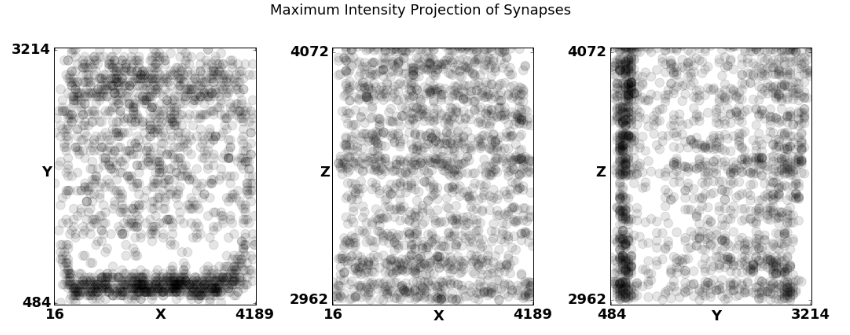
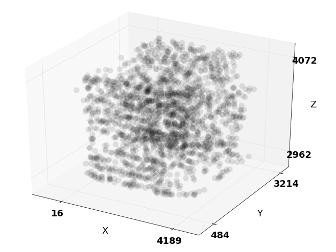
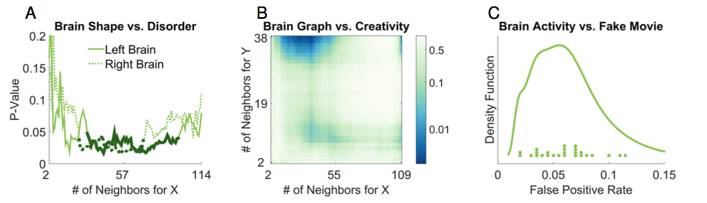
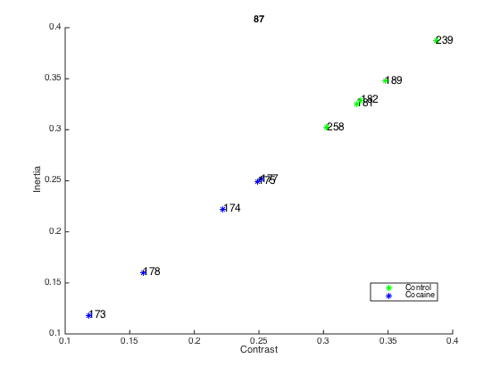
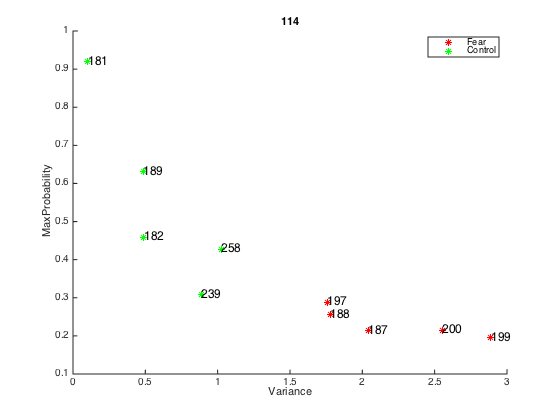
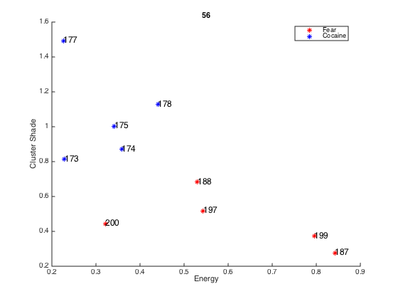
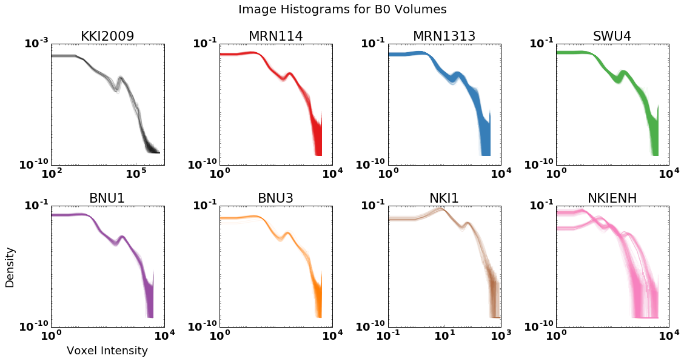
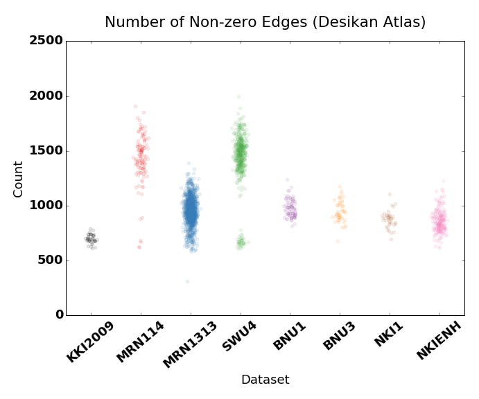
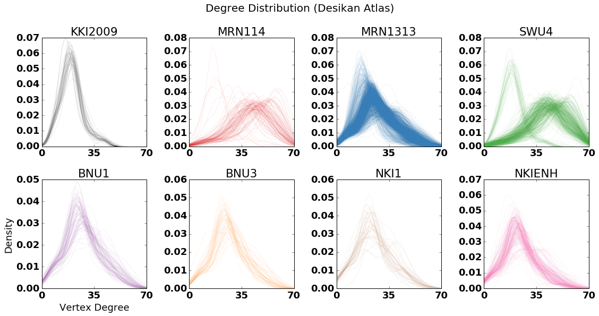
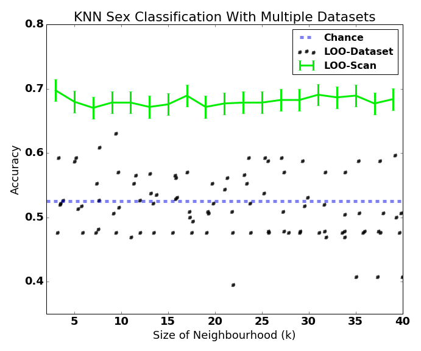

[*Back*](./index.html)
# Discovery
## Optimal Pipeline
We apply our methodology of discriminability to fMRI processing. In particular, we processed 12 test-retest fMRI data sets using 64 processing pipelines. We then compute discriminability estimates of processed data sets. Based on the results, we claim CC200 is a better atlas compared to HOX, AAL and DES. In the meantime, we find that global signal regression and NFF significantly improve discriminability. No scrubbing and FSL is slightly better than scrubbing and ANTS. Furthermore, we discovered that using rank graphs is more discriminable than raw correlation graphs. We are going to further investigate processing pipeline for DTI data sets and compare discriminability of DTI and fMRI.

Figure: Discriminability of raw fMRI graphs from 12 data sets processed 64 ways are plotted. BNU1, BNU2, DC1, IACAS, IBATRT, IPCAS, JHNU, NYU1, SWU1, UM, UWM and XHCUMS are processed by
64 pipelines and discriminability are computed. Colors of points indicate data set; sizes of points are proportional to the number of samples of data set. Black dots represent mean discriminability across 12 data sets. CFXXG pipeline has the best mean discriminability across data sets.
## Extensible Neurocartography
With the aid of the Python API ndio, we are able to access ndstore services programmatically to substantiate the claims made in
Narayanan Kasthuri’s 2015 Cell Paper. Our programmatic representations of these claims, available [on GitHub](https://github.com/neurodata/kasthuri2015) in Jupyter notebooks, illustrate that it is possible to reproducibly conduct neuroscientific inquiry.
## Synapse Spatial Point Patterns
Through analyzing large annotated image volumes we are able to explore the distribution of synapses in space. We have setup [interactive Jupyter notebooks](https://github.com/neurodata/ndpaper/blob/gh-pages/spatialsynapses/synapse_viz.ipynb) attached with sliders which enable combing through the data and investagting properties at local scales which may be overwhelmed when observing the gross data.


## Molecular Synapse Types
Exploratory statistical analysis is being conducted on Synaptome data sets using the R language and environment for statistical computing and graphics. The goal is to discover synapse taxonomy for synapse level neuroscience.

Figure: Pair-wise regressions involving GABA
BR.
The lab notebooks are located [here.](http://docs.neurodata.io/synaptome-stats)
## Using MGC for Human Brain Classification
We first investigate whether brain shape and disease status are dependent on one another. Previous investigations have linked major depressive disorder to the hippocampus shape, though global tests were unable to detect a statistically significant dependence structure at the α = 0.05 level. This brain shape versus disease dataset consists of n = 114 subjects, for each we have an MRI scan as well as a discrete variable indicating whether the subject is clinically depressed (2), high-risk (1), or non-affected (0). From the MRI data, previous work extracted both the left and right hippocampi. For the brain shape “view” of the data, they computed the interpoint comparison matrices using a nonlinear landmark matching approach. For the discrete disorder variable, we use squared Euclidean distance, then add 1 to every non-diagonal entry (so only the diagonals are of distance 0).
The next experiment investigates whether brain networks are independent of creativity. Neural correlates of creativity have previously been investigated, though largely using structural MRI and cortical thickness. Here, we used data from a previously published result on graph similarity, which included for each of n = 109 subjects, we have both diffusion weighted (DW-) MRI data as well as the subject’s “creativity composite index” (CCI). We processed the raw DW- MRI data via MIGRAINE, a pipeline for estimating brain networks from diffusion data. To compute the distance between graphs, we use the semiparameteric test statistic, developed specifically to compare pairs of graphs with labeled vertices. This test statistic was developed to reduce the noise due to the very high-dimensionality of adjacency matrices via employing adjacency spectral graph embedding to reduce the dimensionality into something much smaller; in this case, we chose to embed each graph into 2 dimensions for simplicity. We use simple squared error (Euclidean metric) to compare CCI values.
In the last experiment, MGC is applied to test independence between brain voxel activities and non- existent stimulus similar to a pair of studies led by Eklund et al., by using 26 resting state fMRI data sets from the 1000 functional connectomes project (http://fcon_1000.projects. nitrc.org/), consisting of a total of 1604 subjects. We used CPAC to estimate regional time-series, in particular, using the sequence of pre-processing decisions determined to optimize discriminability. The output for each scan is the resting state fMRI time-series data containing 200 regions of interest for 200 time-steps. We then also generate an independent stimulus by sam- pling from a standard normal at each time step. Of course, the brain activity data and the stimuli
are independent by construction. For each brain region, we test: is activity of that brain region independent of the time-varying stimuli. We pool brain activity over all of the samples from the population. Any regions that are detected significant are false positives by definition. By testing reach brain region separately, we obtain a distribution of false positive rates. If our test is unbi- ased, that distribution should be centered around the significance level, which we set at 0.05 for this experiment.

(A) Local correlation p-value curves with respect to k = 2, . . . , 114 at l = 4 for brain vs disease. l = 4 is the largest possible neighborhood size for the disease data, as it is categorical. Thick solid black lines correspond to the largest region of p-values < 0.05. (B) Local correlation p-value heat map with respect to k = 2,...,109 and l = 2,...,38 for brain MIGRAINE vs CCI. l = 38 is the largest possible neighborhood size for the CCI data, due to repeated distance entries. (C) Density estimate for the false positive rates of MGC on the brain vs noise experiments, with the actual rate of each data shown as dots above the x-axis.
## CLARITY Classification
The goal of this analysis is to show the statistical differences between the different classes of CLARITY brains. For each ROI, fourteen different properties were computed. The analysis shows that it is possible to demonstrate statistical differences between the various classes of CLARITY brains when using unsupervised clustering methods.
None of the methods we experimented with (k-means with different numbers of features) achieved perfect clustering between the three classes. Therefore, we explored to clustering pairs of classes. When looking at pairs of classes at a time, it is apparent that in some cases, only a single feature is needed for classification. The following figure shows all three pairwise combinations.



## MR Batch Effects
The large database of processed graphs from MR subjects enables us the opportunity to explore mega-analyses in MRI data unlike that which has been done previously. The exemplar task we chose to illustrate this capability was exploring the significance of batch effects in data collected in different studies. The first panel shows histograms of B0 image volume intensities from various datasets. We can see slight differences in raw data through this metric, including intensity shifts either left or right by a dataset, or a dataset containing multiple populations. The data summarized here have been run through the [ndmg pipeline](http://m2g.io). We then summarized the graphs through several metrics, two of which are shown here in the second and third panels: number of non-zero edges and degree distribution. We see here that the subtle differences observed - as well as differences we didn't notice from histograms have a pronounced effect in our graphs. In order to assess the significance of these batch effects, we design a classification experiment with the graphs in which we attempt to predict subject sex from their connectome. If there were no batch effects, training with LOO-dataset or LOO-subject techniques would achieve approximately the same results (with the one factor contributing to differences being the slight difference in training sample size when we have a larger leave-out set). However, when we attempt to classify with leave out one dataset we notice that we achieve no better prediction than chance, whereas leave out one subject achieves 70% accuracy using the simplest classifier.




[*Back*](./index.html)